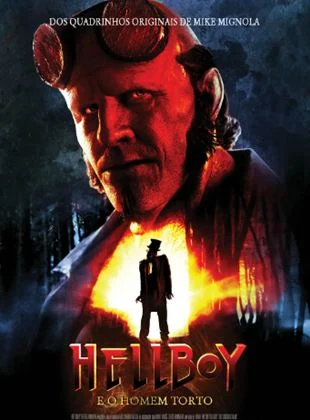

Hellboy e o Homem Torto
Sinopse
5 de setembro de 2024 No cinema | Ação, Fantasia, Terror
Baseado no popular personagem Hellboy da Dark Horse Comics, criado por Mike Mignola, o reboot Hellboy e o Homem Torto traz um novo e mais sombrio capítulo do personagem. Durante a década de 1950, Hellboy (Jack Kesy) se une à Bobbie Jo Song, uma novata agente da B.P.D.P. para uma nova investigação nas Montanhas Apalaches. Lá, descobrem uma remota e assombrada comunidade dominada por bruxas, liderada pelo sinistro demônio local, conhecido como O Homem Torto, que foi enviado de volta à Terra para coletar almas para o diabo. À medida que exploram os mistérios sombrios deste lugar isolado, Hellboy enfrenta segredos enterrados de seu próprio passado, levando-o a uma batalha épica contra forças malignas que ameaçam desencadear o caos sobre o mundo. O filme é dirigido por Brian Taylor, conhecido por seu trabalho em Ghost Rider: Espírito de Vingança, e promete trazer uma abordagem mais fiel ao tom original dos quadrinhos.